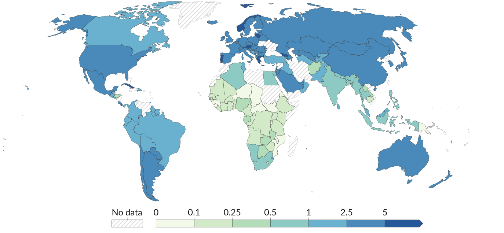
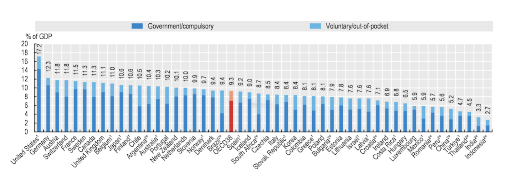
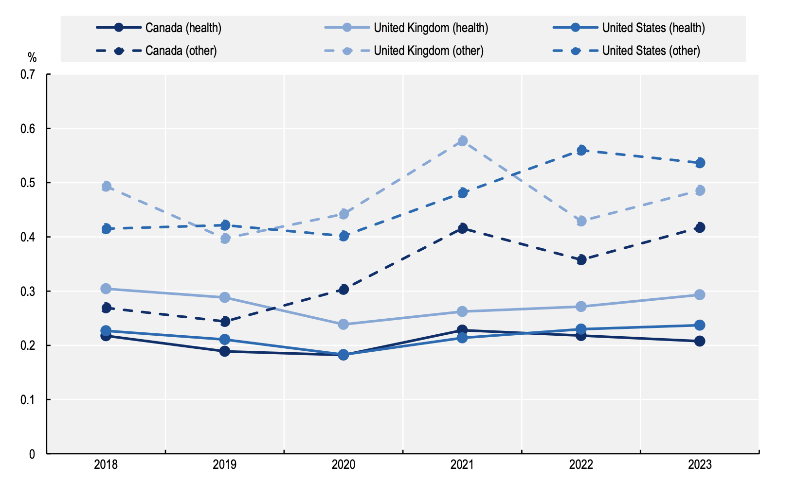
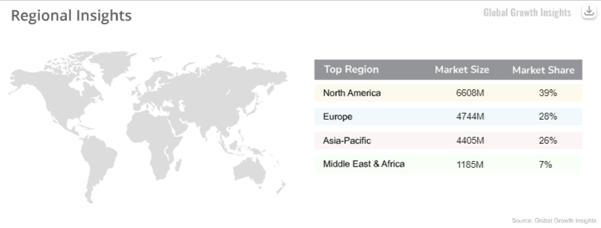
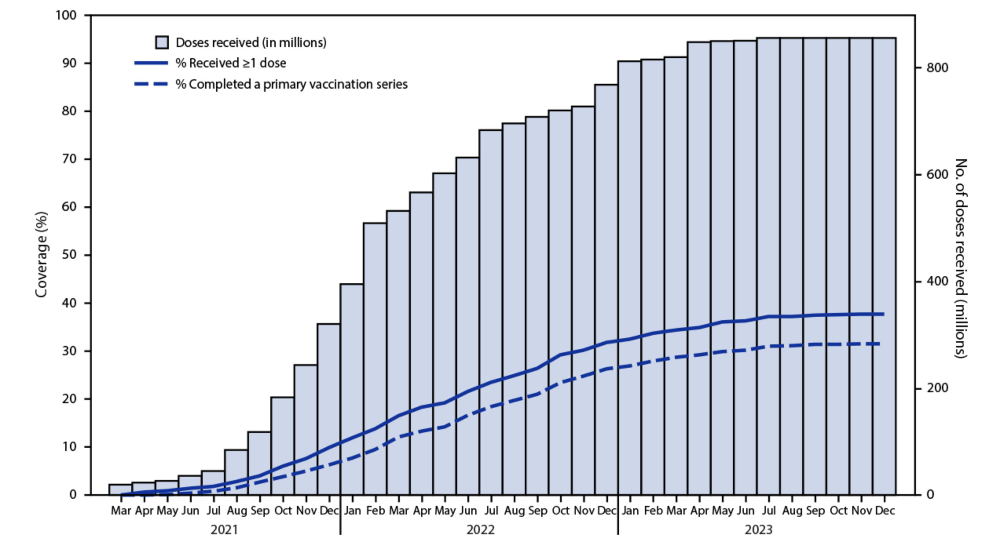
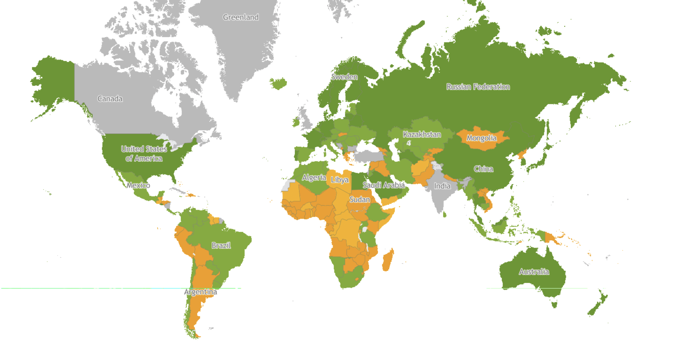

글로벌 의료 격차 완화 프로젝트
UN SDGs 3번 목표: 건강과 웰빙 (3.d: 조기경보 역량 강화)
OECD 선진국과 개발도상국 간 의료 격차를 분석하고,
저비용 디지털 헬스 기술을 통해 격차 완화 가능성을 제시합니다.
프로젝트 목적
저비용 센서 + 모바일 앱 + 디지털 헬스 기술이
의료 인프라가 부족한 지역에서도
조기 위험 인식과 공중보건 대응의 출발점이 될 수 있음을 제시합니다.
글로벌 의료 격차 분석
OECD 선진국과 개발도상국 간 의료 격차는 단순한 자원 차이를 넘어
체계적이고 구조적인 문제입니다. 아래 6가지 핵심 영역에서의 격차를 분석합니다.
의료인력·기초 인프라 격차

짙은 파란색일수록 인구 1,000명 당 의사가 많은 국가를 의미합니다. 유럽·북미·호주 등은 3~5명 수준인 반면, 사하라 이남 아프리카와 일부 아시아 국가는 0.1~1명에 불과해 기초 진료와 응급 대응 능력에서 큰 격차가 발생합니다.
OECD 국가
- 의사·간호사 밀도가 높음
- 병상·장비 보유율 우수
- 기초 진료 및 응급 대응 능력 우수
- 의사 밀도: 약 3.0~4.0+명/1,000명
개발도상국
- 의사 수·간호사·병상 등 기초 자원 부족
- 기본 의료서비스 접근 자체가 제한됨
- 의사 밀도: 약 0.1~1.0명/1,000명
보건의료 지출 및 R&D 투자 격차

파란색 막대는 정부·의무적 지출, 옅은 색 막대는 본인부담(out-of-pocket)을 의미합니다. 미국, 독일, 프랑스 등 OECD 고소득 국가는 GDP의 약 10~17%를 보건의료에 사용하지만, 일부 중·저소득 국가는 5% 이하 수준에 머물러 의료 인력 확충, 장비 도입, 연구개발(R&D) 투자 여력이 크게 제한됩니다.
OECD 국가
- GDP 대비 보건지출 비중이 높음
- 인력·장비·연구개발·디지털화 투자 여력 큼
- CT·MRI·AI 연구·백신 생산 역량 보유
개발도상국
- 보건지출 규모가 낮음
- 첨단 장비 도입과 인력 교육이 제한됨
- R&D 투자 부족으로 기술 격차 확대
첨단 의료기술(AI·로봇수술·디지털헬스) 보급 격차

그래프는 캐나다, 영국, 미국에서 보건 직종(health)과 기타 보건 관련 직종(other)에서 AI 역량을 요구하는 채용 공고 비중이 2018~2023년 사이에 꾸준히 증가하고 있음을 보여 줍니다. 선진국에서는 의료 AI·디지털헬스에 투자하면서 관련 인력을 적극적으로 채용하는 반면, 많은 개발도상국에서는 이러한 AI 기반 보건 인력 수요와 채용 자체가 충분히 발생하지 못하고 있어 첨단 의료기술 보급 격차가 더 벌어지고 있습니다.
OECD·고소득국
- 의료 AI, 로봇수술, 디지털 병원 시스템 도입
- 데이터 인프라 및 전문 인력 보유
개발도상국
- 초기 비용, 데이터 인프라 부족
- 전문 인력 부족 및 규제로 도입 지연
- OECD(2024-2025) 보고서: AI 채택 격차 지적
원격진료(텔레메디슨) 활용의 양극화

모바일 원격의료 시장은 북미(39%, 6,608M)와 유럽(28%, 4,744M)이 전체 시장의 약 67%를 차지하며 압도적 우위를 보입니다. 아시아-태평양(26%, 4,405M)이 그 뒤를 잇지만, 중동·아프리카(7%, 1,185M)는 시장 점유율이 매우 낮습니다. 이는 OECD 국가들이 코로나19 이후 원격진료를 제도화하고 보험·법적 기반을 마련한 반면, 많은 개발도상국은 인터넷 접근성, 전력, 디지털 문해력, 재정 문제로 원격진료 확산이 제한되고 있음을 보여줍니다.
OECD 국가
- 코로나19 이후 원격진료 제도화
- 보험·법적 기반 마련
- 디지털 인프라 구축
개발도상국
- 인터넷 접근성 제한
- 전력·디지털 문해력·재정 문제
- 원격진료 확산 제한
원격진료의 장점: 접근성 향상, 비용 절감
한계: 인프라 및 디지털 문해력 필요
백신·의약품 생산 및 배분의 불평등

그래프는 2021년 3월부터 2023년 12월까지의 백신 접종 추이를 보여줍니다. 누적 접종 횟수는 2021년 급증 후 2023년 중반부터 정체되었고, ≥1회 접종 커버리지는 약 37-38%, 1차 시리즈 완료 커버리지는 약 31-32%에 머물렀습니다. 이는 코로나19 백신 개발·생산이 선진국 및 대형 제약사 중심으로 진행되면서, 아프리카 등 일부 지역은 초기 백신 생산 비율이 1%대에 불과하고 현지 생산 역량 부족으로 공급망 충격과 접종 지연이 발생했음을 보여줍니다.
선진국 및 대형 제약사
- 코로나19 백신 개발·생산 중심
- 생산 역량 및 공급망 보유
아프리카 등 일부 지역
- 초기 백신 생산 비율 1%대에 불과
- 현지 생산 역량 부족
- 공급망 충격과 접종 지연
감염병·팬데믹 대응 역량 차이

SPAR(State Party Annual Report)는 WHO가 각국의 감염병 대응 역량을 평가하는 지표입니다. 초록색은 높은 대응 역량을, 주황색은 중간 수준, 회색은 데이터 부재를 의미합니다. 선진국(미국, 유럽, 호주 등)은 대체로 높은 점수를 보이지만, 많은 개발도상국(특히 아프리카 일부 지역)은 검사 접근성, 병상, 중환자 치료 역량에서 제한을 보입니다. 다만 일부 개발도상국은 지역사회 기반 방역으로 성과를 내기도 합니다.
선진국
- 검사·데이터·중환자 치료 역량 우위
- 의료 인프라 및 자원 보유
개발도상국
- 검사 접근성과 병상 부족
- 피해 확대 경향
- 단, 일부 개발도상국은 지역사회 기반 방역으로 성과
핵심 메시지
이러한 격차는 단순히 자원의 차이가 아니라 구조적이고 체계적인 문제입니다.
하지만 저비용 디지털 헬스 기술은 이러한 격차를 완화할 수 있는 실질적인 해결책을 제시합니다.
저비용 센서 기반 건강 모니터링 데모
데모 개요
저비용 아두이노 센서와 스마트폰만으로 건강 데이터를 실시간으로 측정하고 모니터링할 수 있습니다.
이 기술은 의료 인프라가 부족한 지역에서도 조기 위험 인식을 가능하게 합니다.
센서 상세
데이터 축적 및 공중보건 확장
개인 건강 데이터 → 공중보건 데이터로의 확장
개인의 위험 기록이 시간이 지나면서 쌓이면, 이를 분석하여 지역 보건 대응이 가능해집니다.
1단계: 개인 데이터
개인의 건강 데이터 수집 및 위험 기록
2단계: 지역 데이터
여러 개인 데이터를 집계하여 지역 패턴 분석
3단계: 공중보건 데이터
정책 수립 및 공중보건 대응 기반 마련
위험 기록 리스트
시간 흐름에 따른 위험 기록을 확인하고, 데이터가 쌓일수록 지역 보건 대응이 가능해집니다.
데이터 축적의 사회적 영향
- 조기 경보 시스템: 지역 단위 건강 위험 패턴 조기 감지
- 자원 배분 최적화: 의료 자원이 필요한 지역에 우선 배치
- 정책 수립 기반: 데이터 기반 보건 정책 수립
- 글로벌 협력: 개발도상국 간 데이터 공유 및 협력
기록 상세
정책·사회적 확장 방안
저비용 디지털 헬스 기술의 확장 가능성
이 앱과 같은 저비용 디지털 헬스 기술은 개발도상국, 재난 지역, 의료 취약 지역에서
실질적인 의료 격차 완화 도구로 활용될 수 있습니다.
개발도상국 활용
적용 시나리오
- 의료 인프라 부족 지역: 저비용 센서로 기본 건강 모니터링 제공
- 원격 지역: 블루투스와 모바일 앱으로 의료 접근성 향상
- 예산 제약 지역: 고가 의료 장비 대신 저비용 솔루션 활용
기대 효과
- 의료 접근성 향상
- 조기 위험 감지로 응급 상황 예방
- 공중보건 데이터 수집 기반 마련
재난 지역 활용
적용 시나리오
- 긴급 의료 지원: 재난 발생 시 빠른 건강 상태 모니터링
- 임시 의료 시설: 이동식 센서 네트워크 구축
- 대규모 건강 검진: 효율적인 대량 건강 데이터 수집
기대 효과
- 재난 대응 역량 강화
- 제한된 의료 자원의 효율적 배분
- 실시간 건강 모니터링으로 상황 파악
의료 취약 지역 활용
적용 시나리오
- 농촌 지역: 의료 시설 접근이 어려운 지역의 건강 모니터링
- 고령자 거주 지역: 만성질환 관리 및 응급 상황 대비
- 저소득 지역: 의료비 부담 완화 및 예방적 건강 관리
기대 효과
- 의료 격차 완화
- 예방적 건강 관리로 의료비 절감
- 지역 보건 역량 강화
구현 전략
1. 기술 접근성
저비용 센서와 스마트폰만으로 구축 가능하여 초기 투자 비용이 낮습니다.
2. 교육 및 훈련
지역 보건 인력에 센서 사용법과 데이터 해석 방법을 교육합니다.
3. 데이터 보안 및 프라이버시
개인 건강 정보 보호를 위한 법적·기술적 보안 체계 구축이 필요합니다.
4. 정부 및 국제기구 협력
WHO, UN 등 국제기구와 협력하여 표준화 및 확산을 추진합니다.
사회적 영향 및 기여
결론
저비용 디지털 헬스 기술은 단순한 기술 솔루션이 아니라,
의료 격차 완화와 공중보건 역량 강화를 위한 실질적인 도구입니다.
이를 통해 UN SDGs 3번 목표 달성과 더 나은 건강한 사회 구현에 기여할 수 있습니다.